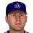
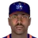
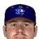
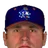
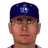
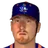
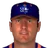
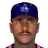

Federal Baseball League · Depth chart & lineups
Carolina Disco Turkeys
← Team page · Payroll · Transactions
Based on games played and started through May 13, 2002. The OOTP export has no saved depth chart or lineup card, so this is derived from real usage. Lineups and depth chart list only players on the active roster now (26 players).
Most common lineups
For each batting-order spot, the active player who started there most often against that kind of starter (each player used once). Starts in spot = games he started in that spot out of the games against that hand. AVG/OBP/SLG: his season line with this club.
vs. right-handed starters 25 games
| # | Player | Pos | Starts in spot | AVG | OBP | SLG |
|---|---|---|---|---|---|---|
| 1 | CF | 22 of 25 | .236 | .321 | .347 | |
| 2 |  Lyle Overbay | 1B | 23 of 25 | .285 | .361 | .416 |
| 3 | C | 21 of 25 | .268 | .354 | .439 | |
| 4 | RF | 19 of 25 | .290 | .365 | .594 | |
| 5 | Bubba Trammell | DH | 14 of 25 | .261 | .349 | .403 |
| 6 |  Terrence Long | LF | 16 of 25 | .270 | .333 | .380 |
| 7 | 2B | 9 of 25 | .235 | .323 | .309 | |
| 8 |  Chad Tracy | 3B | 15 of 25 | .320 | .393 | .484 |
| 9 | SS | 8 of 25 | .241 | .302 | .365 |
vs. left-handed starters 15 games
| # | Player | Pos | Starts in spot | AVG | OBP | SLG |
|---|---|---|---|---|---|---|
| 1 | CF | 13 of 15 | .236 | .321 | .347 | |
| 2 | 2B | 7 of 15 | .235 | .323 | .309 | |
| 3 | C | 11 of 15 | .268 | .354 | .439 | |
| 4 | RF | 11 of 15 | .290 | .365 | .594 | |
| 5 | Bubba Trammell | DH | 11 of 15 | .261 | .349 | .403 |
| 6 | Terrence Long | LF | 8 of 15 | .270 | .333 | .380 |
| 7 | SS | 6 of 15 | .241 | .302 | .365 | |
| 8 | Chad Tracy | 3B | 5 of 15 | .320 | .393 | .484 |
| 9 |  Mike Matheny | C | 4 of 15 | .423 | .500 | .731 |
Depth chart games started by position through May 13
| Pos | Role | Player | GS at pos | G | AVG | OBP | SLG | HR |
|---|---|---|---|---|---|---|---|---|
| C | Starter | 32 | 35 | .268 | .354 | .439 | 5 | |
| Backup 1 | Mike Matheny | 8 | 9 | .423 | .500 | .731 | 1 | |
| 1B | Starter | Lyle Overbay | 34 | 37 | .285 | .361 | .416 | 3 |
| Backup 1 | Karim Garcia | 4 | 19 | .286 | .308 | .508 | 4 | |
| Backup 2 | Cody Ransom | 0 | 13 | .300 | .364 | .400 | 1 | |
| 2B | Starter | 35 | 38 | .235 | .323 | .309 | 0 | |
| Backup 1 | Cody Ransom | 5 | 13 | .300 | .364 | .400 | 1 | |
| 3B | Starter | Chad Tracy | 37 | 37 | .320 | .393 | .484 | 2 |
| Backup 1 | Cody Ransom | 3 | 13 | .300 | .364 | .400 | 1 | |
| SS | Starter | 37 | 37 | .241 | .302 | .365 | 3 | |
| Backup 1 | 2 | 38 | .235 | .323 | .309 | 0 | ||
| Backup 2 | 1 | 1 | .750 | .750 | .750 | 0 | ||
| LF | Starter | Terrence Long | 34 | 37 | .270 | .333 | .380 | 3 |
| Backup 1 | Troy O'Leary | 4 | 7 | .353 | .421 | .588 | 0 | |
| Backup 2 | Karim Garcia | 2 | 19 | .286 | .308 | .508 | 4 | |
| CF | Starter | 35 | 37 | .236 | .321 | .347 | 2 | |
| Backup 1 | Terrence Long | 3 | 37 | .270 | .333 | .380 | 3 | |
| Backup 2 | Karim Garcia | 1 | 19 | .286 | .308 | .508 | 4 | |
| Backup 3 | 1 | 38 | .290 | .365 | .594 | 11 | ||
| RF | Starter | 35 | 38 | .290 | .365 | .594 | 11 | |
| Backup 1 | Karim Garcia | 5 | 19 | .286 | .308 | .508 | 4 | |
| Backup 2 | Terrence Long | 0 | 37 | .270 | .333 | .380 | 3 | |
| DH | Starter | Bubba Trammell | 36 | 36 | .261 | .349 | .403 | 4 |
| Backup 1 | Karim Garcia | 3 | 19 | .286 | .308 | .508 | 4 |
Rotation OOTP projected starters (projected_starting_pitchers.csv)
| # | Pitcher | Active | GS | W-L | IP | ERA | WHIP | K |
|---|---|---|---|---|---|---|---|---|
| 1 | Yes | 8 | 7-0 | 51.2 | 3.66 | 1.28 | 33 | |
| 2 |  Stan Spencer | Yes | 8 | 1-4 | 42.1 | 4.89 | 1.49 | 20 |
| 3 |  Blake Stein | Yes | 8 | 2-1 | 38.0 | 6.87 | 1.66 | 29 |
| 4 | Ben Rivera | Yes | 7 | 0-3 | 34.2 | 6.49 | 1.67 | 28 |
| 5 | Yes | 9 | 6-1 | 58.0 | 2.79 | 1.31 | 27 |
Bullpen roles from usage: closer = most saves, setup = most holds, long relief = most innings per outing (1.1+ IP)
| Role | Pitcher | Throws | G | SV | HLD | IP | IP/G | ERA | K |
|---|---|---|---|---|---|---|---|---|---|
| Closer | RHP | 13 | 10 | 0 | 13.2 | 1.1 | 1.32 | 19 | |
| Setup | Mike Wood | RHP | 13 | 0 | 1 | 30.2 | 2.4 | 4.40 | 14 |
| Setup | Ricky Stone | RHP | 7 | 0 | 3 | 12.0 | 1.7 | 3.75 | 13 |
| Long relief | Danny Patterson | RHP | 9 | 0 | 0 | 18.0 | 2.0 | 4.50 | 11 |
| Long relief |  Mike Mohler | LHP | 5 | 0 | 1 | 11.0 | 2.2 | 1.64 | 11 |
| Middle relief | Vladimir Nunez | RHP | 12 | 0 | 1 | 8.2 | 0.7 | 4.15 | 4 |
| Middle relief |  Josias Manzanillo | RHP | 10 | 0 | 0 | 13.1 | 1.3 | 8.10 | 8 |
Bench active position players outside the regular lineups
| Player | Pos | G | PA | AVG | OBP | SLG |
|---|---|---|---|---|---|---|
| Karim Garcia | LF | 19 | 65 | .286 | .308 | .508 |
| Cody Ransom | 2B | 13 | 33 | .300 | .364 | .400 |
| Troy O'Leary | LF | 7 | 19 | .353 | .421 | .588 |
| 2B | 1 | 4 | .750 | .750 | .750 |
Injured list
Nobody on the injured list.